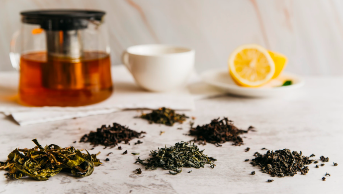

代理政策
丹东凤凰山自古有辽东第一山的美誉。常年吸引全国各地游客前来观赏。山上的泉水清甜甘洌，是大自然对于小镇市民最好的馈赠。而老毕纯粮就坐落在凤凰山脚下，坚持纯粮酿造，借凤凰山名号可以作为特产出售。我们不生产酒，我们只是大自然的搬运工。
茶叶源于中国，茶叶最早是被作为祭品使用的。但从春秋后期就被人们作为菜食，在西汉中期发展为药用，西汉后期才发展为宫廷高级饮料，普及民间作为普通饮料那是西晋以后的事。

中国目前白酒市场上，至少有60%-70%的白酒属于非纯粮酿造的酒精勾兑酒。尽管国家允许白酒生产使用食用酒精，但添加食用酒精勾兑与纯粮酿造酒成本悬殊至少在2倍以上，然而许多白酒企业却“用而不标”。